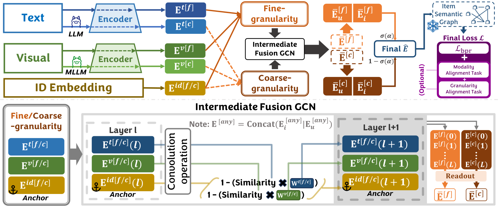
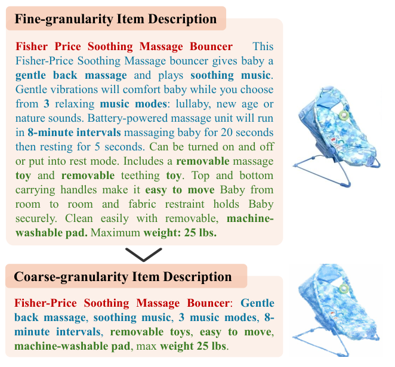
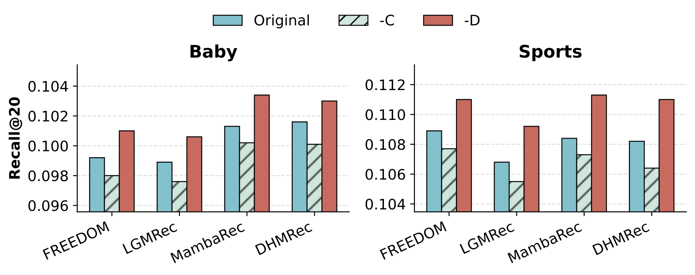
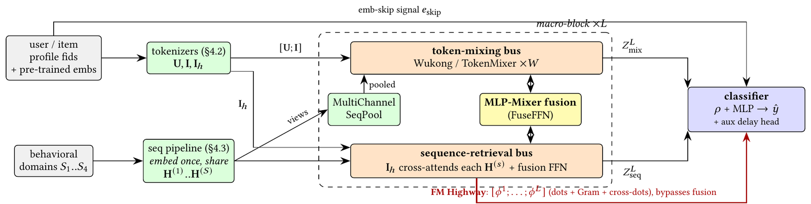
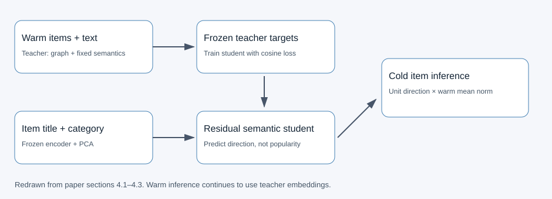
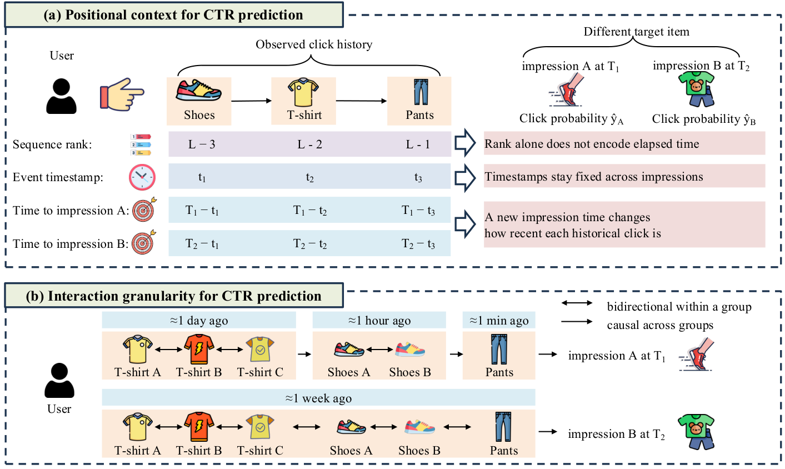

目录 · 6 节
1现有做法卡在哪2先构造原始细档与生成粗档，再在传播里融合3走一遍：这件婴儿摇椅怎样变成粗细两档，又怎样被融合4四个数据集上，效果和消融说明什么5这对做图多模态推荐的人意味着什么6局限「按摩 20 秒、休息 5 秒」这种细节，稀疏交互未必学得会：DIGCN 怎样留下原文，再生成一档粗特征
Baby 数据集里有一件 Fisher-Price Soothing Massage Bouncer。细粒度文案写得很完整：能给婴儿做背部按摩、播放安抚音乐，有 3 种音乐模式，电池按摩单元按 8 分钟一轮工作，按摩 20 秒、休息 5 秒，还有可拆卸的按摩玩具和牙胶，布垫可机洗，最大承重 25 磅。图也是实拍，纹理和花色都在。
推荐系统要判断哪个用户会喜欢这件商品。交互却非常少：四个亚马逊数据集在 5-core 过滤之后，稀疏度仍在 99.55% 到 99.95%。从这么少的点击里，既要学会「这是能按摩、能机洗的婴儿摇椅」这种品类线索，又要学会把两件外观相近的摇椅区分开，并不容易。
这篇论文来自香港大学、香港理工大学、英属哥伦比亚大学、香港科技大学和卢森堡大学，提出 DIGCN（Dual-granularity raw feature empowered Intermediate fusion Graph Convolutional Network）。它要解决多模态推荐里的两件事：多粒度表示很难从稀疏交互里训练好，以及融合模态时，只靠对比对齐会把模态特有的信息压掉。现有做法里，MambaRec 是在训练中构建多尺度表示，用来捕捉细粒度语义；MMSSL（用对比学习对齐模态与协同信号的推荐模型）和 BM3（同样用对比学习看模态关系的推荐模型）则把不同模态拉近。多数近期工作还把融合放在图卷积之后，也就是先各传各的、最后再合并的晚期融合。DIGCN 先退一步：用大模型在训练前直接生成一档粗粒度的文本和图像，作为对原有细粒度特征的补充，再用中间融合的图卷积网络（GCN），在传播过程中以 ID 为锚点、按动态权重把各模态合进去。在四个常用亚马逊数据集上，相对最强基线 MambaRec，Sports、Pet、Office 的 Recall@20 相对提高 5.17% 到 8.81%。Baby 上表 2 是 0.1052 对 0.1013，但第 4.2 节写的相对提升 3.54% 与按表回算对不上，所以不并入这个区间。在更稀疏的用户和冷启动的物品上，优势也还在。
训练前先保留原始细粒度内容，再用大模型额外生成一档粗粒度内容，然后在图卷积传播过程中做带动态权重校正的中间融合，就可以在稀疏推荐里同时改善多粒度表示和模态融合；这一结论目前只建立在四个 5-core 亚马逊数据集上。
现有做法卡在哪
多粒度如果放到训练里学，就要在稀疏的用户–物品交互上再加一套区分粗细的监督。交互本来就少，信号不够，表示就不容易练稳。融合如果只做对齐，目标是把各模态的距离拉近，模态里那些彼此并不相同、但对排序有用的信息会被一起压掉。
融合的时机也有代价。早期融合在进 GCN 之前就把各模态拧在一起，模态内部的结构容易被冲淡。晚期融合等图卷积走完再合并，又会错过传播过程中才出现的跨模态信号。DIGCN 的提议是：粒度先在原始特征上准备好，融合则放到每一层消息传递中间去做。
先构造原始细档与生成粗档，再在传播里融合
粗档不是用来换掉原文案和原图的。对文本，提示是 “Please generate a coarse-grained version for this text”；对图像，提示是按这张原图和商品标题生成一版更粗的视觉参照。实现里，文本用 GPT-4o，图像用 DALL-E-3。作者只额外生成一档粗特征，再和原来的细特征组成双粒度，是为了控制开销，也减少大模型随机性带来的波动。原文案、原图和生成出来的粗文案、粗图，会先分别经过预训练提取器和一层线性映射，变成同一维度的向量，再进入图传播。行为模态的 ID embedding 在粗、细两条传播分支里共享一份初始化，但各自保留锚点状态。
融合发生在中间融合 GCN 里。每一层先按邻居把 ID 和各模态的表示传一遍，得到一个临时的 ID 锚点，以及文本、图像各自传来的表示。然后算一个动态校正权重：权重等于 1 减去该模态与这个临时锚点的余弦相似度。余弦在 -1 到 1 之间，权重就落在 0 到 2 之间。再把各模态按这个权重加回到 ID 锚点上，并用 1 加上所有权重做分母，避免某一个模态独占。
示意：某一层里，文本表示和临时 ID 锚点的余弦是 0.8，图像是 0.2。文本权重就是 1-0.8=0.2，图像权重是 1-0.2=0.8。分母是 1+0.2+0.8=2。所以已经和 ID 很像的模态少补一点，差别更大的模态多补一点。层与层之间，谁该多说话可以跟着表示一起变，不必事先固定一套模态权重。
最后把各层、两档粒度的表示读出并加权合并。旁边还有一张物品–物品语义图：先把各模态原始特征的余弦相似度加总，再取出最近邻，训练时这张图保持冻结，只做一跳聚合。多数工作会给每个模态各建一张图、再聚合多跳，这里只保留一张图和一跳，计算量也更小。主损失是 BPR。对比对齐不是必需部件，但需要时可以再叠上去。

走一遍：这件婴儿摇椅怎样变成粗细两档，又怎样被融合
下面用论文图 6 里这件 Baby 商品走一遍。文案来自论文案例，权重计算是标明的示意。
第一步，留下细档。细粒度文案是完整的产品说明，包含 “gentle back massage”“soothing music”、3 种音乐模式，以及「8 分钟一轮里按摩 20 秒、休息 5 秒」这种精确间隔，还有可拆卸玩具、可机洗布垫和 25 磅承重。原图则保留纹理和花色。这些细节后面用来区分外观相近的商品。
第二步，生成粗档。大模型把同一段文案收短，保留 “Gentle back massage”“soothing music”“machine-washable pad” 这些品类级线索，精确的「按摩 20 秒、休息 5 秒」被去掉，整段变成更密的短描述。粗粒度图像则减弱纹理，更强调颜色、形状和结构。商品身份还在，只是低层细节被抽掉了。
第三步，两条分支分别做图传播。细档和粗档各走一遍中间融合 GCN，ID 当锚点。用户侧的模态表示，由训练时一跳邻居物品的特征平均得到。到这一步，摇椅的文本、图像和 ID 还没有被提前拧成一个向量。
第四步，按层做动态融合。还用前面那个示意账：文本已经和 ID 很像时只补 0.2，图像差得更远时补 0.8，再按分母 2 归一化。于是跨模态信号在传播中被写进 ID 锚点，文本或图像自己的表示仍然按模态更新，不会先被对齐目标拉成同一个方向。
第五步，读出并打分。各层融合后的 ID 锚点先取平均，再按一个可学习的 Sigmoid 权重（初始化后粗细各占一半）把两档合起来，得到用户和物品的最终向量，用内积做 BPR 排序。物品还可以从那张一跳语义图里加上相似邻居的信息。这件摇椅因此同时带着「能按摩、能机洗」的粗线索，和「20 秒/5 秒间隔、具体玩具」的细线索。

如果只保留细档，模型仍有原始图文里的语义，但没有生成粗档提供的那一档更概括的视角。如果只用生成出来的粗档去替换原文和图，细的区分能力会丢掉。论文后文用对照组验证了这一点。
四个数据集上，效果和消融说明什么
实验在 Amazon 的 Baby、Sports、Pet、Office 四个 5-core 评论集上进行，交互按 8:1:1 随机划分，指标是 Recall 和 NDCG，报五次随机种子的平均。DIGCN 和全部基线都在 MMRec 框架里实现，初始维度 64。下面只看 Recall@20，对照最强基线 MambaRec。
| 数据集 | MambaRec | DIGCN | 相对提升 |
|---|---|---|---|
| Baby | 0.1013 | 0.1052 | — |
| Sports | 0.1084 | 0.1140 | 5.17% |
| Pet | 0.1589 | 0.1729 | 8.81% |
| Office | 0.1449 | 0.1543 | 6.49% |
（数字来自论文表 2 与第 4.2 节；DIGCN 在全部数据集和指标上相对所有基线均 p<0.05。）Baby 这一格不填相对提升，是因为第 4.2 节写的 3.54% 与按表 2 四位小数回算的约 3.85% 对不上。
这说明双粒度原始特征和 ID 锚定的中间融合，在这四个集上都带来了统计显著的排序提升。Pet 和 Office 上的相对收益更大，作者把它与这两份更冗长的商品描述联系起来：粗粒度抽象更容易保住核心语义。DIGCN 没有使用对齐损失，就已经超过 MMSSL、BM3、MambaRec 这些对比学习基线。
消融比较了四个变体：去掉粗粒度特征、把中间融合改成晚期融合、去掉物品–物品图，以及保留融合结构但改用固定的均匀权重。四个数据集上，完整模型都最好，拿掉任何一块都有明显下降。双粒度在 Pet 和 Office 上尤其有用，这和上面关于冗长描述的观察一致。均匀权重这一变体说明，动态校正本身也有贡献，不只是「在传播里融合」这个骨架。
对齐不是必需的。加上 InfoNCE 的三种变体后，基座 DIGCN 还会再涨一点：只对齐模态、只对齐粗细粒度，都有用，两者一起的 +MG-Align 最好。以 Baby 的 Recall@20 为例，从 0.1052 升到 0.1063。所以这些任务适合当成可选增强，不是 DIGCN 能成立的前提。
按用户训练交互数分组后，DIGCN 在每一档都最好，而且在最稀疏的 (0-5] 和 (5-10] 组里优势更大。物品冷启动则随机拿掉 20% 物品的全部训练交互：DIGCN 的 Recall@20 在四个集上是 0.0633、0.0669、0.0552、0.0544，同期 MambaRec 是 0.0611、0.0633、0.0497、0.0486。这说明预构造的内容语义，在协同信号更弱、甚至物品没有任何训练交互时，仍然帮得上忙。
一个关键对照是：别的强基线如果只用生成特征替换原文和图（-C），效果通常会变差；把生成特征和原始特征一起用（-D），才看得出收益来自两档结合。所以 DIGCN 的好处，不是因为生成内容本身比原文更好。

换 GPT-4o、Qwen3-Max、Gemini-2.5-Pro、DeepSeek-R1 和不同的图像生成器，Recall@20 只有很小的额外差异，按五次改写提示计算的标准差也低。开源组合同样有竞争力。默认仍用两档：加到 3 档或 4 档，均值还会略升，但标准差变大，作者因此把两档当作默认。中间融合的层数 L=3 在各集上最好。训练本身也不算更重：在 Baby 上，DIGCN 每个 epoch 2.99 秒、显存 2.40 GB，MambaRec 是 9.01 秒和 4.88 GB。大模型生成是离线预处理，每个模态对每个物品只调用一次，特征可以跨训练复用。
这对做图多模态推荐的人意味着什么
多粒度可以先做成原始特征，融合也可以放在图传播中间做；不必一上来就在稀疏交互上同时训练粗细表示，也不必把对齐当成融合的唯一手段。
若商品文案很长、交互却很少，可以先用大模型生成一档更短的粗描述和一张更强调结构的粗图，并明确把它们当作补充，而不是替换。融合时可以看每一层里各模态和 ID 锚点有多像，再决定这一层补多少，不必事先固定模态权重。若已经有对比对齐的现成损失，可以把它当作可选插件加在 DIGCN 上面，先看不加时的基座是否已经够用。上线前还要把生成特征拿去核对事实和有害内容，因为它们会继承生成器本身的偏差。
局限
全部主结果都建立在四个 5-core 亚马逊评论数据集上，划分是随机的 8:1:1，没有在其他领域或在线 A/B 里验证。相对 MambaRec，Sports、Pet、Office 的 Recall@20 相对提升从 5.17% 到 8.81%，所以幅度随数据集变化，不能当成一个固定的普遍涨幅。Baby 的相对提升因表 2 与第 4.2 节不一致，没有并入这个区间。
消融证明拿掉各部件都会下降，完整模型在四个数据集上都最好。叠加对齐带来的额外提升也较小。生成粗档会继承底层生成器的偏差和事实错误，所以细档必须保留；论文也提示，部署前应当检查事实一致性、有害内容和领域公平性。
读完这篇，你觉得
夜读鸮记下了，谢谢你的反馈。
点一下即可，无需登录；再点一次撤回。只统计匿名次数，不记录你是谁。
相关论文RELATED

Personalization · 2026-08-19UniDot: A Unified Network for Sequence Modeling and Feature Interaction in Large-scale Recommendation排序模型通常把字段交叉和行为序列分成两个塔，到最后一层才拼在一起。UniDot 把用户、物品字段和多域行为序列都变成同一空间的 token，用两条并行通路一起处理，每层交换一次信息；同时把每层算出的点积原样拼起来，绕过融合层直接送进分类器。它在腾讯广告转化预测比赛中拿到 AUC 0.83217，排第 2。最值得借鉴的是两个便宜的部件：消融里这条点积旁路贡献最大；两条通路互相蒸馏、上线只用一条，AUC 仍有 0.83184，推理时间减半。
Personalization · 2026-10-16Bridging the Topological Divide: Dual-Branch Graph Distillation with Semantic Priors for Robust Cold-Start Recommendation新物品没有交互边，图推荐便无法从邻居获取兴趣信号。作者先用文本语义固定协同空间，再让独立学生网络学习表示方向，并在检索时恢复向量长度；Sports冷启动Recall@20比DropoutNet高20.8%。
Personalization · 2026-10-29Rethinking Positional Encoding and Interaction Granularity for CTR Prediction在 OneTrans 这类统一 Transformer 的 CTR 模型里，作者在快手 KuaiRand 数据上试了六种位置编码，没有一种比完全不加位置编码更好。武汉大学和腾讯的这篇论文据此提出 TRIP（作者给整套方法起的名字）：每个行为同时编码它在序列里排第几，以及它离这次预测过去了多久，并按这个时间距离分组：把离这次预测的秒数取以 2 为底的对数再取整，每组覆盖的时间是前一组的两倍；同组的行为互相可见，不同组之间只能看更早的组。同一段历史，换一个曝光时间，每个行为离现在多远就全变了，语言模型的位置编码没考虑过这点。在四个公开数据集上，AUC 比最强基线平均相对提升 1.47%，在腾讯广告数据集 TAAC（腾讯公开的广告点击数据）上最高提升 4.45%。
讨论
欢迎补充实验细节、复现经验或不同看法。需 GitHub 登录。
正在加载讨论…